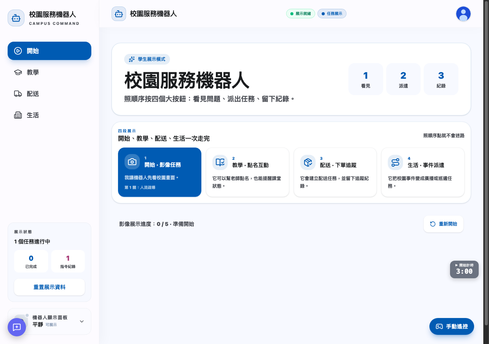
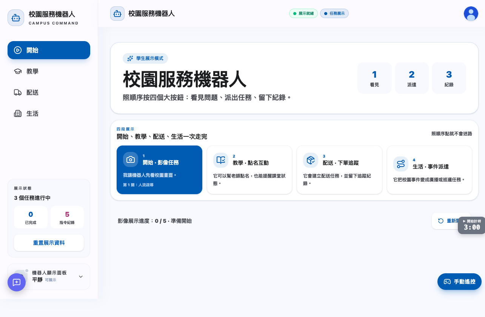
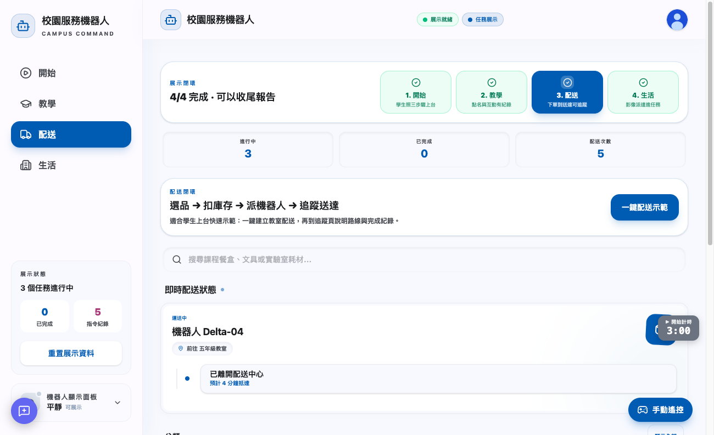
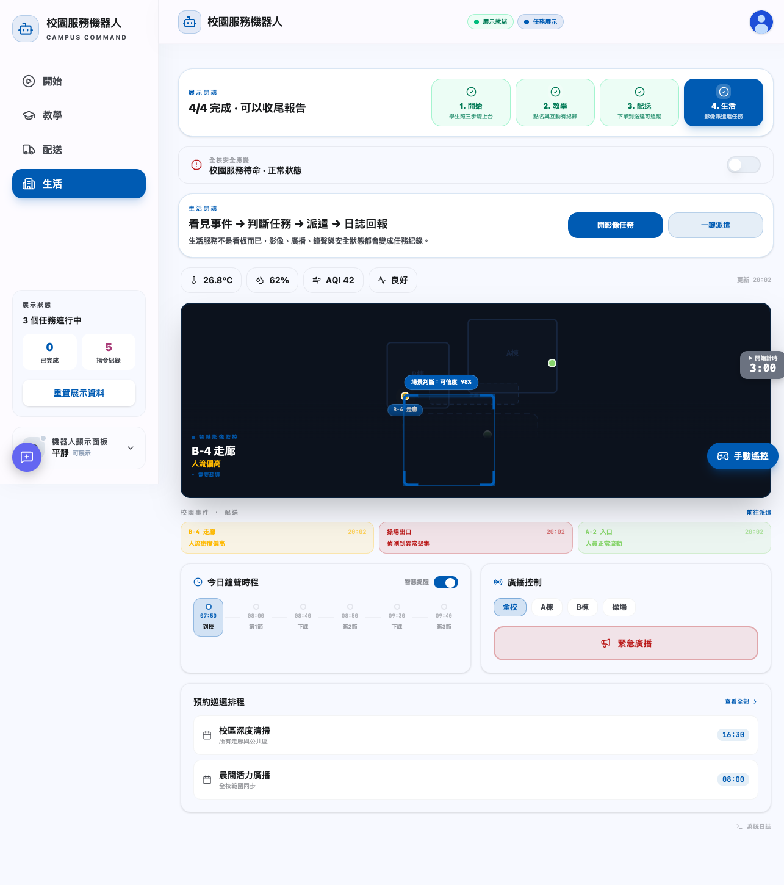
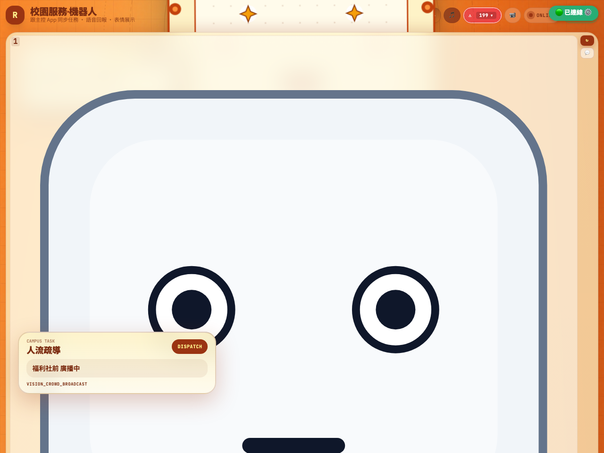
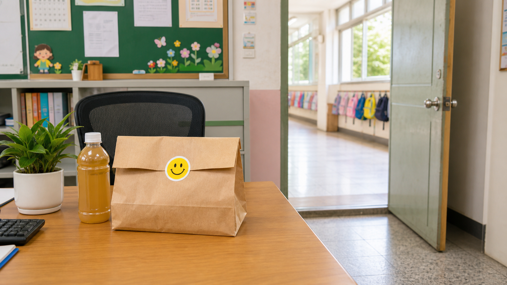

不用背功能名稱。照順序按四個大按鈕，就能完成一場完整展示。
用圖卡做影像任務。
點名和課堂互動。
建立訂單並追蹤。
把事件派成任務。
看到四個大按鈕後，從左到右依序按。

學生只要看這個頁面，不用進設定、不用看技術狀態。

按「1 點名」，再說明機器人能協助老師掌握課堂狀態。

按「一鍵配送示範」，說明訂單、庫存和追蹤會留下紀錄。

按「一鍵派遣」，讓評審看到校園事件會變成任務。
如果有 iPad 或第二個螢幕，打開機器人顯示端。學生按 App 的任務後，機器人臉會同步任務名稱和狀態。

列印後，一張一張放到鏡頭前測。不要五張同時拿。

老師提醒：圖卡距離鏡頭約 30 到 50 公分，讓畫面充滿大約一半到三分之二。